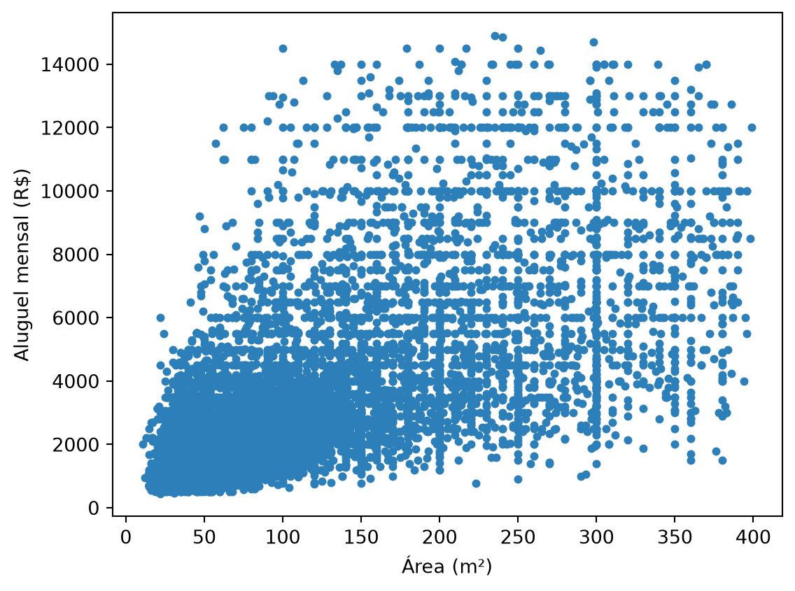
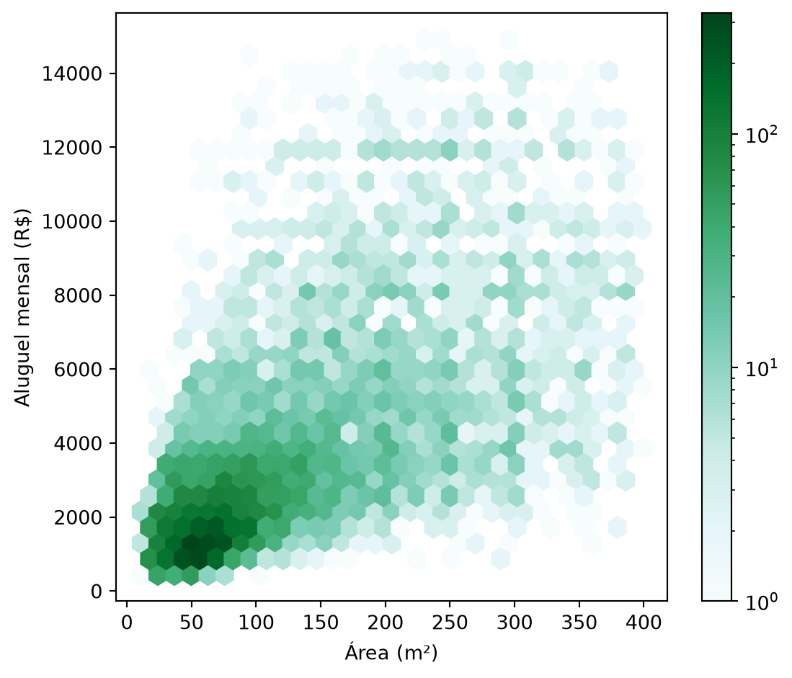
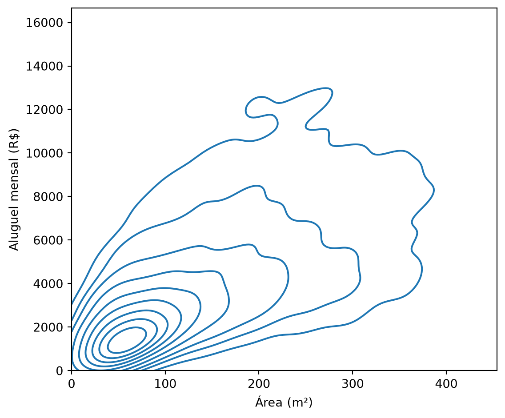
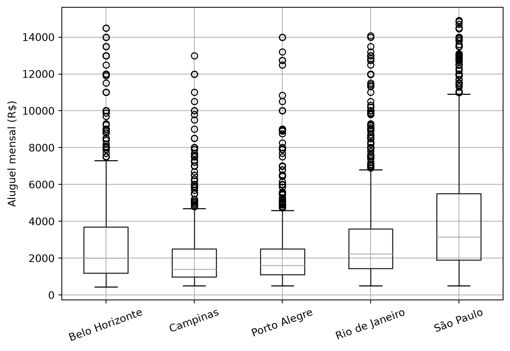
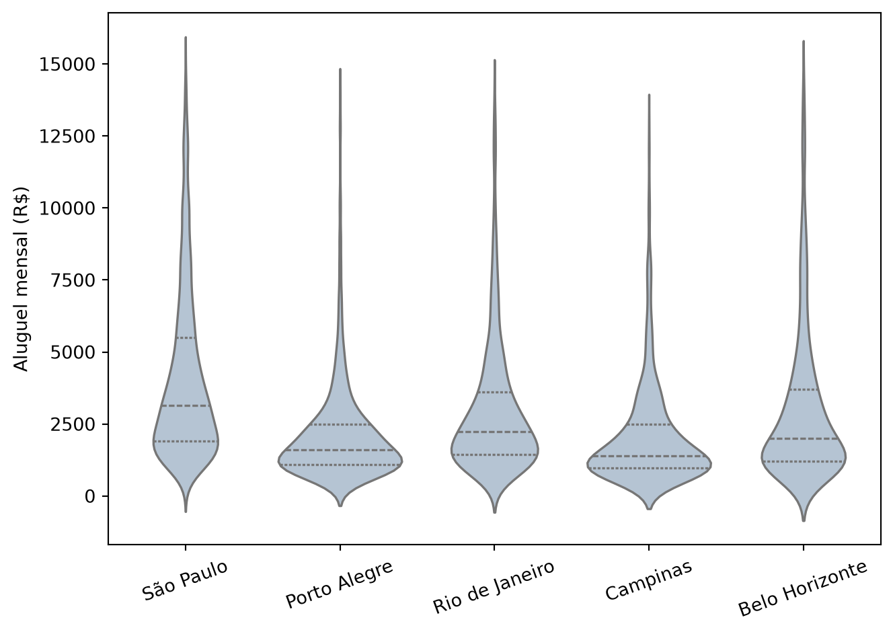
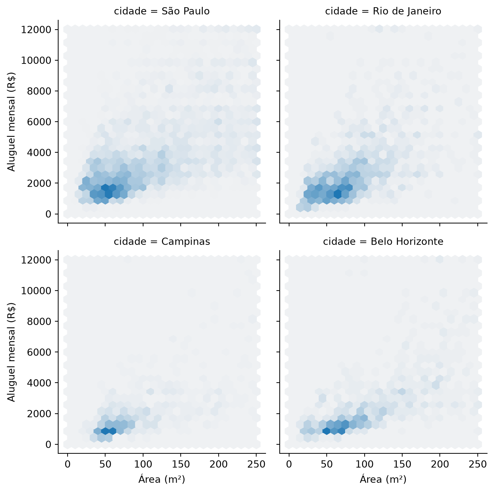

alugueis = pd.read_csv("dados/alugueis.csv")
comum = alugueis[(alugueis["area_m2"] < 400) & (alugueis["aluguel"] < 15000)]
print(f"anúncios no recorte: {num(len(comum), 0)}")anúncios no recorte: 9.987Esta seção corresponde à seção 1.8 de Bruce et al. (2020).
Esta seção está fora do cronograma do semestre 2.2026: não é dada em aula, não entra no notebook do capítulo e não cai em prova nem em lista. Fica aqui para quem quiser ir além.
A seção anterior resolveu um problema específico: dadas duas variáveis numéricas, elas se movem juntas? A resposta coube em um único número (o r de Pearson) e num gráfico de dispersão que mostrava a mesma informação para o olho. Essa dupla funciona bem enquanto duas condições se mantêm: as duas variáveis precisam ser numéricas, e o número de pontos precisa ser pequeno o bastante para a nuvem continuar legível.
Nenhuma das duas condições é garantida, e esta seção lida com o que sobra quando elas faltam. E se as duas variáveis forem categóricas, sem “subir” nem “descer” para medir? E se uma for categórica e a outra numérica, que ferramenta substitui o r? E se houver tantos pontos que a própria nuvem de pontos deixe de funcionar? A seção segue esses três pares de tipos, na ordem das subseções a seguir: numérico × numérico, categórico × categórico, categórico × numérico. No fim, olha para mais de duas variáveis ao mesmo tempo.
Continuamos com os anúncios de aluguel das seções anteriores, no mesmo recorte de imóveis comuns que a seção 1.7 fixou.
anúncios no recorte: 9.987O gráfico de dispersão da seção 1.7 desenhava os mesmos 9.987 imóveis com transparência, e por isso funcionava. Veja o que acontece sem esse cuidado, com cada ponto opaco, como sai por padrão.

Dez mil pontos já bastam para o problema aparecer. Onde o dado é denso, os pontos se empilham uns sobre os outros e a região vira uma mancha uniforme: dá para ver que ali há “muitos” imóveis, mas não se são dois mil ou seis mil, nem onde exatamente eles se concentram dentro da mancha. A informação de quantos pontos caem em cada lugar se perde antes de chegar à tela, e é justamente ela que interessa no miolo da distribuição.
Duas ferramentas resolvem isso sem descartar pontos: o hexbin, que divide o plano em células hexagonais e colore cada uma pela contagem, e o contorno de densidade (KDE), que estima uma superfície contínua de densidade e a desenha como curvas de nível.

O hexbin não desenha um ponto por imóvel: ele conta quantos imóveis caem em cada célula e traduz a contagem em cor. O núcleo mais escuro fica nas áreas de até uns 100 m² com aluguel de até uns R$ 3 mil, faixa que sozinha reúne quase metade dos anúncios, e a nuvem se afina para as bordas. A relação positiva entre área e aluguel, que a mancha sólida escondia, aparece como a diagonal ao longo da qual as células se alinham.
O bins="log" muda a cor, não os dados: a escala passa a ser logarítmica, de modo que a diferença entre 1 e 10 anúncios ocupa o mesmo pedaço da régua de cores que a diferença entre 10 e 100. Sem isso, a célula mais cheia (mais de trezentos imóveis) esmaga todas as outras, e o gráfico vira um pontinho escuro num campo branco, que é o mesmo problema da mancha sólida com outra aparência. O preço é que a cor deixa de ser proporcional à contagem, e comparar dois tons exige olhar a régua ao lado.

As curvas de nível contam a mesma história do hexbin, só que mais suave: cada curva une pontos de densidade igual, como as isolinhas de um mapa topográfico. O clip existe porque a estimativa de densidade não sabe que área e aluguel não podem ser negativos, e sem ele as curvas vazariam para o lado esquerdo do zero. O centro concêntrico confirma o núcleo que o hexbin já mostrava, e a densidade cai gradualmente em todas as direções a partir dele, sem os degraus abruptos de célula para célula que o hexbin, por ser discreto, necessariamente tem.
A pergunta muda de figura quando nenhuma das duas variáveis tem uma ordem numérica para “subir” ou “descer”. O r de Pearson não se aplica a duas categorias, porque ele precisa de valores que se somem e se afastem de uma média. A ferramenta aqui não é um coeficiente nem uma nuvem de pontos: é uma tabela.
Vamos cruzar a cidade do anúncio com o fato de o imóvel vir mobiliado ou não, as duas colunas categóricas da seção 1.6. Aqui voltamos à base completa, e não ao recorte: ele foi definido para conter os extremos de área e de preço, que não têm efeito sobre uma pergunta feita só de categorias.
| mobiliado | não | sim | All |
|---|---|---|---|
| cidade | |||
| Belo Horizonte | 1081 | 177 | 1258 |
| Campinas | 742 | 111 | 853 |
| Porto Alegre | 874 | 319 | 1193 |
| Rio de Janeiro | 1095 | 406 | 1501 |
| São Paulo | 4294 | 1593 | 5887 |
| All | 8086 | 2606 | 10692 |
São 10.692 anúncios, distribuídos em cinco cidades e duas respostas possíveis. A linha All traz o total de cada coluna, e a coluna All, o total de cada cidade.
Olhe a coluna sim. São Paulo tem 1.593 imóveis mobiliados, quase quatro vezes mais que o Rio de Janeiro, que vem em segundo. É tentador ler isso como “São Paulo é a cidade onde mais se aluga mobiliado”. Mas a contagem mistura duas coisas: a frequência do imóvel mobiliado e o tamanho da cidade na amostra. São Paulo responde por 55% dos anúncios, então tem mais de tudo, inclusive mais mobiliados. Comparar contagens brutas entre grupos de tamanhos tão diferentes é um erro clássico, e é exatamente o que a tabela de contagem convida a fazer.
| mobiliado | não | sim |
|---|---|---|
| cidade | ||
| Belo Horizonte | 85,9 | 14,1 |
| Campinas | 87,0 | 13,0 |
| Porto Alegre | 73,3 | 26,7 |
| Rio de Janeiro | 73,0 | 27,0 |
| São Paulo | 72,9 | 27,1 |
Dividir cada linha pelo seu próprio total remove o tamanho do grupo da conta e isola o que interessa: a taxa.
Em proporção, as cinco cidades se separam em dois blocos. São Paulo (27,1%), Rio de Janeiro (27,0%) e Porto Alegre (26,7%) têm cerca de um imóvel mobiliado a cada quatro. Belo Horizonte (14,1%) e Campinas (13,0%) ficam na metade disso. A tabela de contagem, dominada pelo tamanho de São Paulo, não deixava esse agrupamento aparecer.
Aqui uma variável é categórica e a outra numérica. Nem o r de Pearson se aplica (ele pede duas variáveis numéricas), nem a tabela de contingência (ela pede duas categóricas). A ferramenta natural é comparar a distribuição da variável numérica dentro de cada categoria, e o boxplot generaliza bem para isso: uma caixa por categoria, lado a lado.

As medianas (a linha dentro de cada caixa) ordenam as cidades de forma nítida: São Paulo tem a mais alta, R$ 3.150, e Campinas a mais baixa, R$ 1.400. No meio ficam Rio de Janeiro (R$ 2.245), Belo Horizonte (R$ 2.000) e Porto Alegre (R$ 1.600), nessa ordem.

O boxplot resume cada distribuição nos cinco números da seção 1.5: os quartis formam a caixa, a mediana é a linha de dentro, e os bigodes vão até o ponto mais distante dentro de 1,5 distância interquartil, com o que sobra desenhado ponto a ponto. É compacto, mas apaga a forma: duas distribuições bem diferentes (uma concentrada num único pico, outra com dois picos separados) podem produzir boxplots quase idênticos, porque cinco números não distinguem “concentrado no meio” de “concentrado em dois lugares”. O violin plot troca a caixa por uma densidade espelhada dos dois lados: a largura em cada altura é proporcional à densidade estimada naquele aluguel, calculada pelo mesmo método do KDE que desenhou as curvas de nível no começo desta seção. Por ser uma estimativa suavizada, ela arredonda os cantos da distribuição e se estende um pouco além do maior e do menor valor observados. Todas as cinco cidades mostram a mesma assimetria, com um bojo largo nos aluguéis baixos afinando numa cauda para cima, e é essa forma comum que o boxplot, ocupado em resumir tudo à mediana e aos quartis, deixa passar como só “a distância do terceiro quartil ao máximo é grande”.
Tudo até aqui comparou exatamente duas variáveis. Perguntas reais costumam ter uma terceira à espreita: será que a relação entre área e aluguel é a mesma em qualquer lugar, ou ela muda dependendo da cidade? A forma de responder é condicionar: fixar um valor da terceira variável de cada vez e repetir o gráfico de par para cada um. Visualmente, isso é uma grade de painéis pequenos (um FacetGrid) em vez de um único gráfico agregado.
quatro = comum[comum["cidade"].isin(
["São Paulo", "Rio de Janeiro", "Belo Horizonte", "Campinas"])]
def hexbin(x, y, color, **kwargs):
cmap = sns.light_palette(color, as_cmap=True)
plt.hexbin(x, y, gridsize=25, cmap=cmap, **kwargs)
g = sns.FacetGrid(quatro, col="cidade", col_wrap=2, height=3.6)
g.map(hexbin, "area_m2", "aluguel", extent=[0, 250, 0, 12000])
g.set_axis_labels("Área (m²)", "Aluguel mensal (R$)")
plt.tight_layout()
plt.show()
A grade mostra quatro das cinco cidades, por espaço; Porto Alegre fica de fora do desenho e volta na tabela logo abaixo. O extent fixo em todos os painéis (aqui, até 250 m² e R$ 12 mil) é o que torna os quatro comparáveis entre si: sem ele, cada painel escalaria os eixos para os seus próprios dados, e uma diferença real poderia se confundir com um artefato de escala. O preço é que os imóveis acima desses limites ficam fora do desenho, o que afeta São Paulo mais que Campinas, porque São Paulo tem mais imóveis grandes e caros.
Um aviso sobre a cor: cada painel normaliza o próprio tom mais escuro pela célula mais cheia dele, então um hexágono escuro em Campinas vale menos anúncios que um hexágono igualmente escuro em São Paulo. Os painéis são comparáveis na posição e no espalhamento da nuvem, que é o que interessa aqui, e não na intensidade da cor.
Comparados na mesma régua, os quatro painéis contam histórias diferentes. Campinas se concentra num aglomerado pequeno, com quase dois terços dos anúncios abaixo de R$ 2 mil. Belo Horizonte forma uma faixa diagonal nítida, que sobe com a área sem se espalhar muito. São Paulo e Rio de Janeiro têm nuvens mais altas e mais dispersas: para a mesma área de 50 a 100 m², os aluguéis vão de R$ 1 mil a mais de R$ 6 mil.
Essa impressão visual tem um número por trás, e é o da seção anterior:
cidade
Belo Horizonte 0,697
Campinas 0,716
Porto Alegre 0,691
Rio de Janeiro 0,638
São Paulo 0,638
dtype: strA correlação entre área e aluguel é mais alta em Campinas (0,716) e em Belo Horizonte (0,697) do que em São Paulo e no Rio de Janeiro (0,638 nas duas). Nas duas capitais maiores, a área explica menos do preço: localização, condomínio e padrão do prédio pesam mais, e o resultado é a nuvem mais espalhada que os painéis mostram.
cidade
Belo Horizonte 20,0
Campinas 18,6
Porto Alegre 22,3
Rio de Janeiro 30,0
São Paulo 31,2
dtype: strA mesma área custa quase o dobro dependendo da cidade: o metro quadrado mediano sai por R$ 31,2 em São Paulo e R$ 18,6 em Campinas, com Rio de Janeiro (R$ 30,0), Porto Alegre (R$ 22,3) e Belo Horizonte (R$ 20,0) entre os dois extremos. Repare no que essa conta é: a mediana da razão entre aluguel e área, ou seja, o patamar de preço de cada cidade. Ela não mede quanto o aluguel sobe a cada metro quadrado a mais, que é outra pergunta e exigiria ajustar uma reta. O hexbin e o KDE do começo desta seção, que somavam as cinco cidades numa única superfície, não tinham como mostrar nem uma coisa nem a outra.
| Par de tipos | Ferramenta |
|---|---|
| Numérico × numérico | Gráfico de dispersão; hexbin ou contorno KDE quando há muitos pontos |
| Categórico × categórico | Tabela de contingência, em proporção por linha e não em contagem bruta |
| Categórico × numérico | Boxplot agrupado; violin plot quando a forma da distribuição importa |
Regra prática: o tipo das duas variáveis decide a ferramenta, não o contrário. Antes de escolher um gráfico, pergunte que tipo é cada variável. Se uma delas for numérica com muitos pontos, pergunte também quantos são, e se a densidade no miolo da nuvem faz parte da resposta.
1. Por que o gráfico de dispersão com pontos opacos falha no miolo da nuvem, e o hexbin não?
Porque os pontos se sobrepõem: onde o dado é denso, o desenho vira uma mancha uniforme, e a informação de quantos imóveis caem em cada região se perde antes de chegar à tela. Dois mil e seis mil pontos empilhados produzem exatamente a mesma mancha. O hexbin não desenha pontos individuais: divide o plano em células hexagonais e colore cada uma pela contagem de imóveis que caem nela, transformando densidade em cor. Isso continua legível justamente onde o gráfico de dispersão satura.
A transparência (alpha) é um meio-termo: ajuda até certo ponto, porque regiões mais densas ficam mais escuras, mas também satura quando há sobreposição suficiente.
2. Na tabela de contagem, São Paulo tem 1.593 imóveis mobiliados e Campinas tem 111. Isso significa que se aluga mobiliado com mais frequência em São Paulo?
Não é o que a contagem mostra. São Paulo tem 5.887 anúncios e Campinas, 853: São Paulo tem mais de tudo porque é um grupo sete vezes maior. Em proporção, a diferença existe, mas é bem menor do que a contagem sugere: 27,1% em São Paulo contra 13,0% em Campinas, ou seja, cerca do dobro, e não catorze vezes.
Comparar contagens brutas entre grupos de tamanhos muito diferentes é um erro clássico; a normalização por linha existe exatamente para evitá-lo.
3. O gráfico agregado de área contra aluguel mistura as cinco cidades. Que erro de leitura isso pode causar, e como a grade de painéis o evita?
O gráfico agregado sugere que existe um preço só para cada área. Entre os imóveis de 55 a 65 m², a mediana do aluguel é R$ 1.950 em São Paulo, R$ 1.600 no Rio de Janeiro, R$ 1.300 em Porto Alegre e R$ 1.100 em Belo Horizonte e em Campinas. Quem lê a nuvem agregada vê essas cinco cidades empilhadas, e boa parte do que parece dispersão do mercado é, na verdade, a distância entre patamares de cidades diferentes.
A grade de painéis evita isso fixando uma cidade por vez, com os mesmos eixos nos quatro, o que deixa os patamares lado a lado em vez de somados.
Vale dizer o que este caso não é. As cinco cidades sobem na mesma direção, e o agregado fica no meio delas, sem inversão de sinal: não é um Paradoxo de Simpson como o da Introdução, em que a relação dentro dos grupos aponta para o lado contrário da relação agregada. O que se perde aqui é a diferença de nível entre os grupos, que já é motivo suficiente para condicionar antes de concluir.